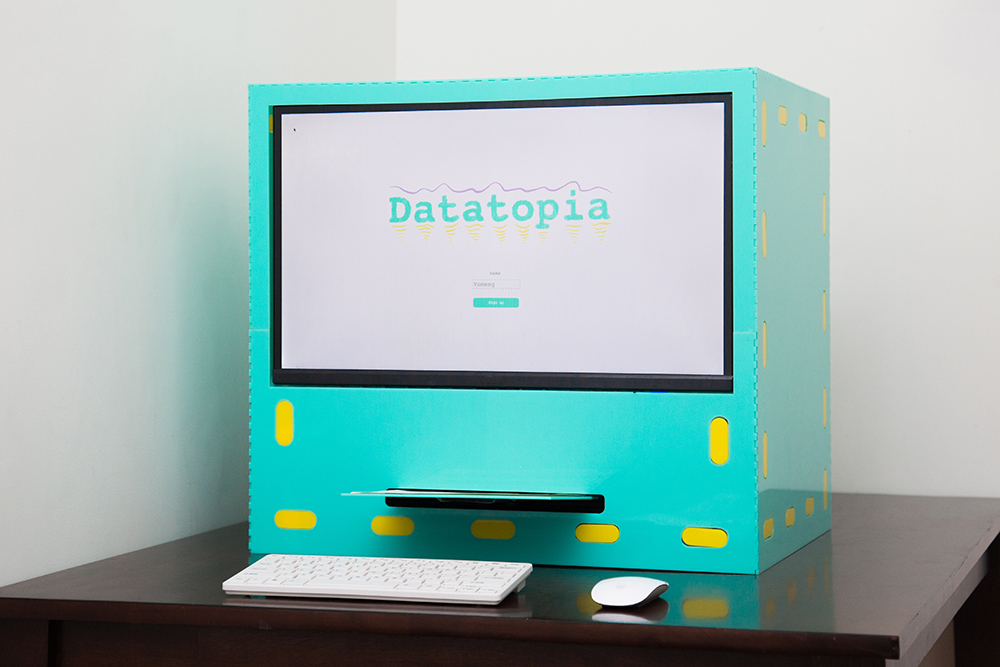
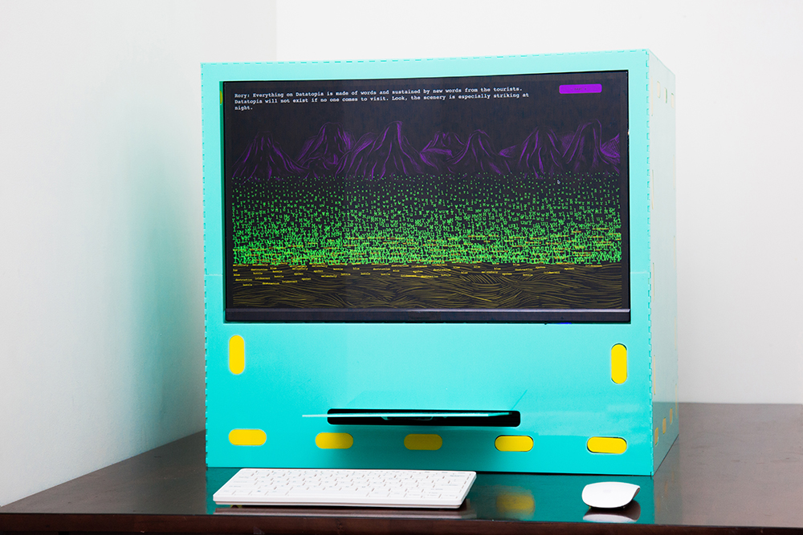
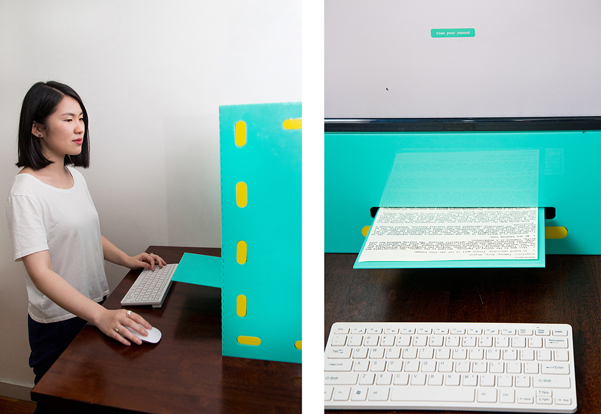
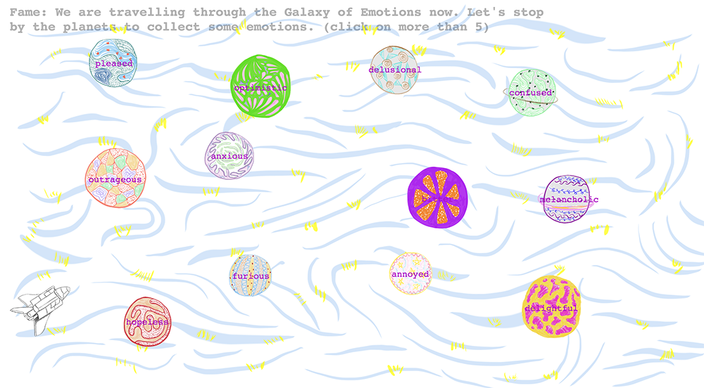
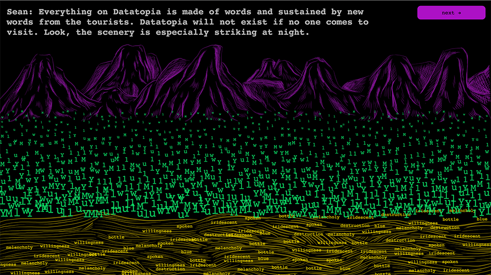
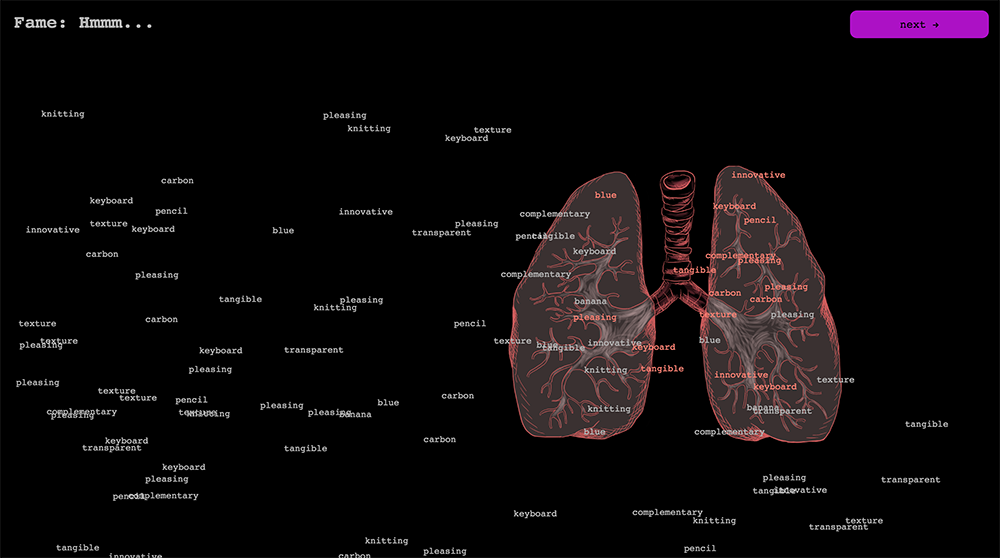
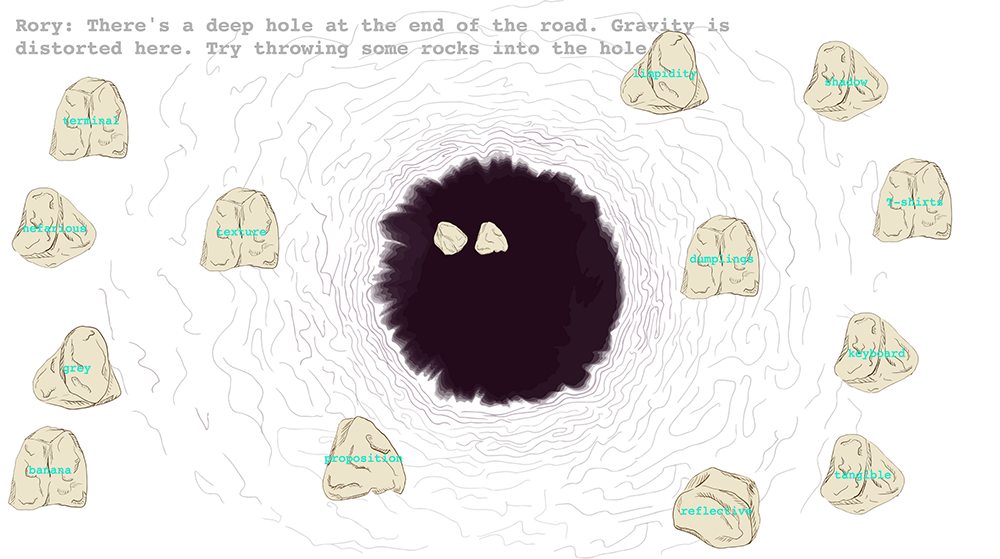
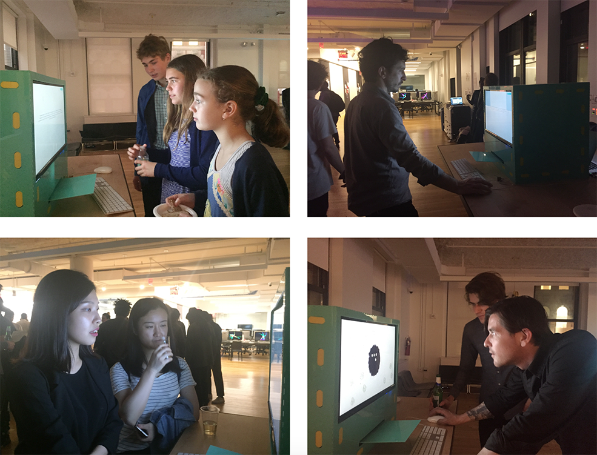

2016
Datatopia is an interactive installation that reframes the unsustainable online data tracking system into a sci-fi narrative. It consists of an interface embedded in a green box to experience the narrative of traveling in a world made of text, a server that logs all the information the audience has input, and a printer that prints out a unique story generated based on user input every time. During the narrative of the journey, the user also travels with two other passengers who have been to Datatopia before to give instructions in each scene. Their names are the real names of the previous two users.
Looking at the development of personal privacy in history, Datatopia investigates different types of relationships between us and the data we generate on daily basis to speculate the future definition of privacy. Some definitions of privacy in history include being an unnatural ideology, physical boundaries, psychological awareness, legal rights to fight for, commodities, luxuries, etc.
What the future of privacy will be? Will it disappear again for wealth, convenience, fame and more radical social transparency? One answer may be that privacy will the ability to construct an unobstructed identity without the interference of the information overflow from data mining. But of course, this is a very broad question and Datatopia does not give an answer. It only intends to raise awareness for the general audience of the vulnerability of their data collected by marketers for unethical commercial use. The printout story, created with several techniques of natural language processing, provides a more tangible form to look at our own information that we have neglected. I also would like every audience to take away something physical from the project. Some information of the two previous travelers are also leaked in the story.
The printout stories:
Screenshots from the narrative:
   Photos of audience interacting with the installation at the school exhibition Tangram.
